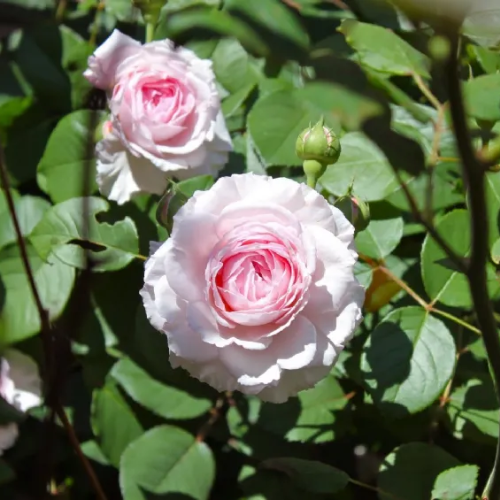
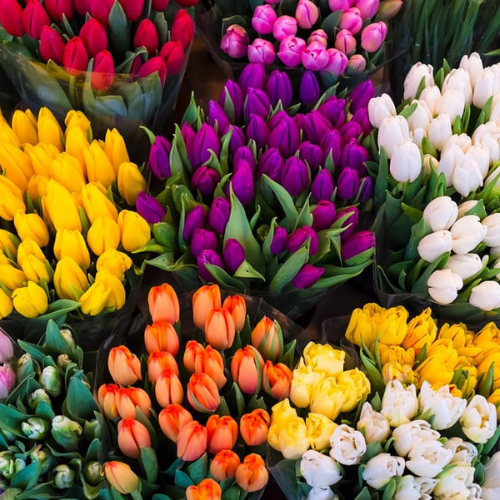
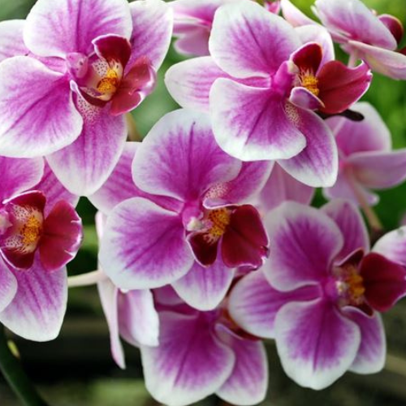
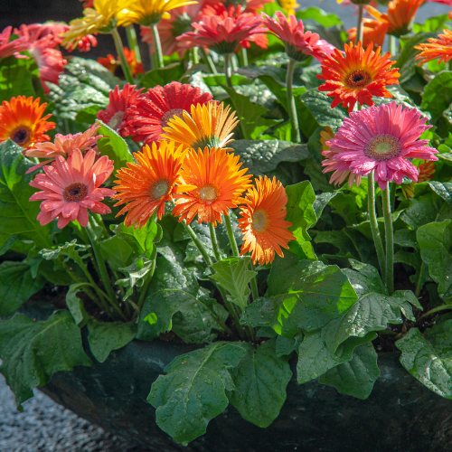
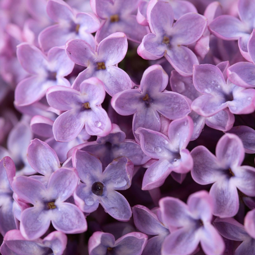
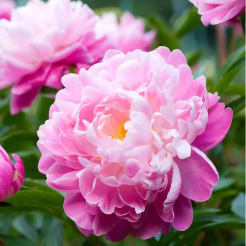
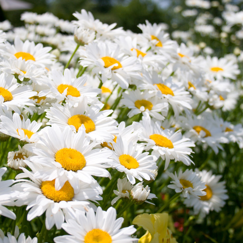

Verde Incantato offre una selezione di fiori freschi, colorati e profumati, perfetti per ogni giardino, terrazzo o evento speciale. Coltivati con cura, i nostri fiori portano bellezza e magia in ogni angolo, con varietà stagionali e rare per ogni occasione.

Le rose sono simbolo di bellezza e passione. Disponibili in numerosi colori, sono ideali per ogni occasione speciale.

I tulipani sono fiori eleganti che sbocciano in primavera, con una vasta gamma di colori vivaci.
Simbolo di positività e solarità, i girasoli sono perfetti per portare luce in ogni giardino.

Le orchidee sono eleganti e raffinate, ideali per aggiungere un tocco di lusso ai tuoi spazi.

Con i loro colori vivaci e la forma delicata, le gerbere sono perfette per qualsiasi composizione floreale.

I lillà sono fiori profumati, ideali per creare giardini primaverili con un tocco di eleganza.

Le peonie, con i loro grandi fiori morbidi, sono ideali per giardini romantici e rigogliosi.

Le margherite sono fiori semplici e allegri, perfetti per dare un tocco fresco e naturale al tuo giardino.
Verde Incantato
P.IVA 02134920687